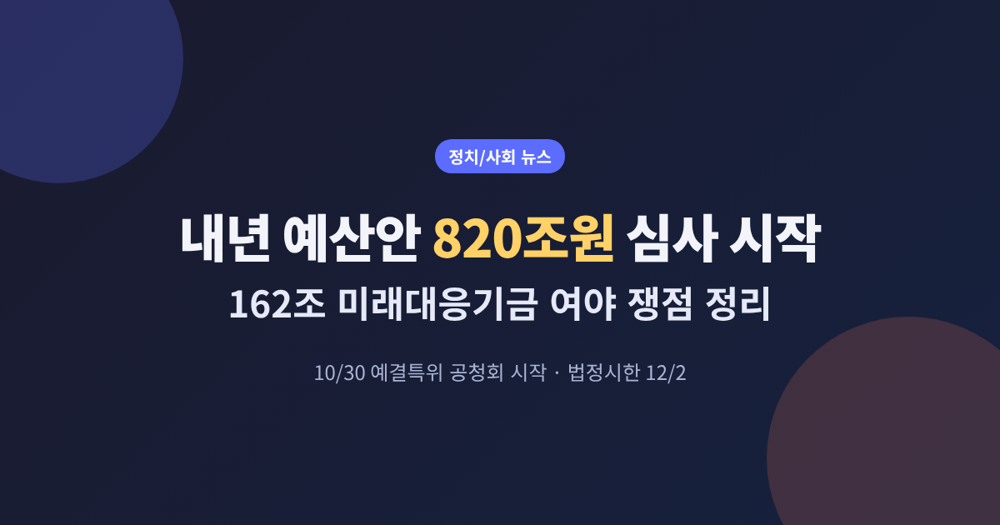
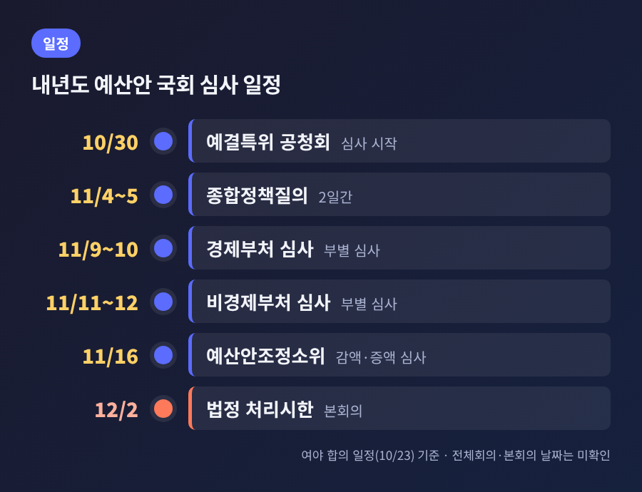
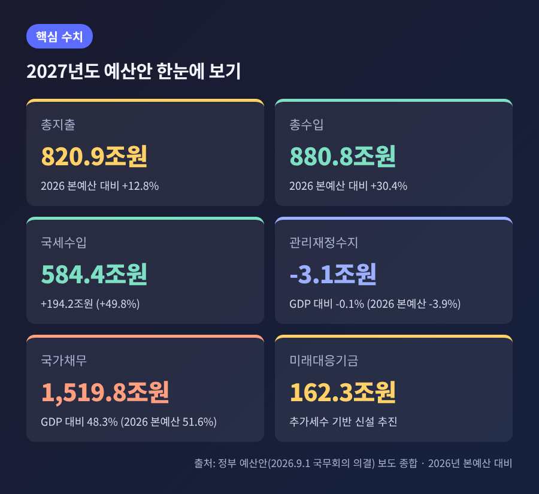
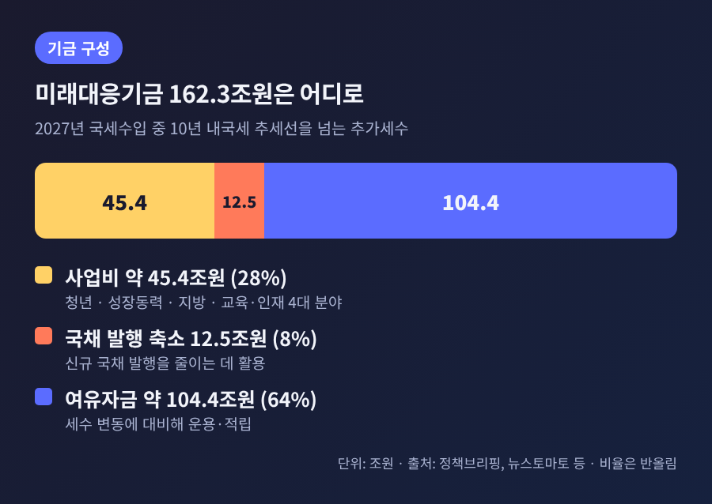
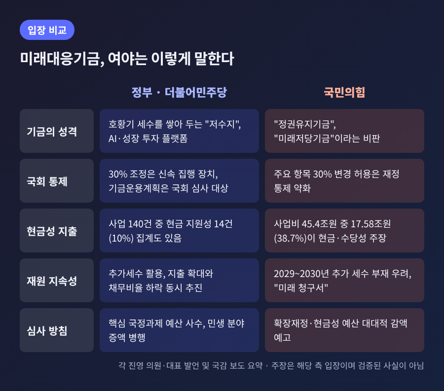
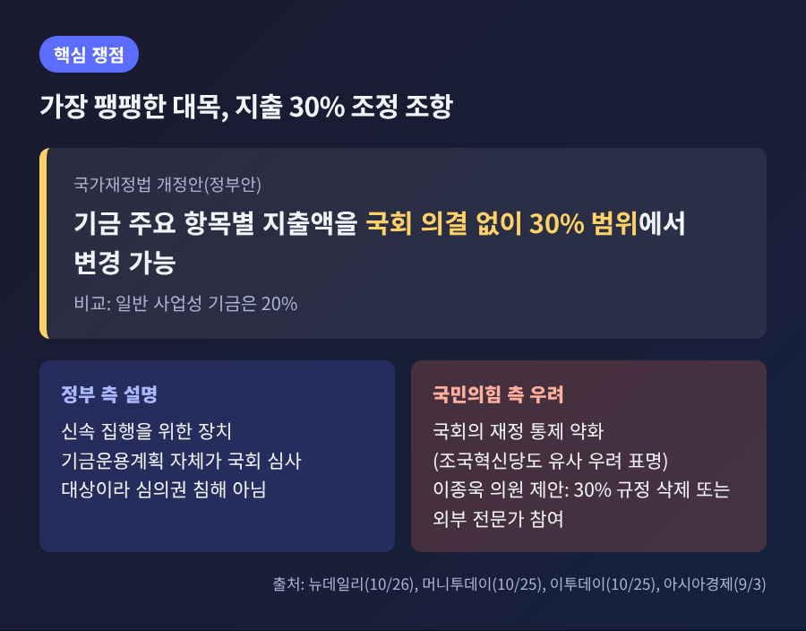

오늘은 10월 30일부터 시작되는 국회의 내년도 예산안 심사를 정리해 보려 합니다.
국정감사가 마지막 주를 지나는 가운데, 820조 9,000억원 규모 예산안과 162조 3,000억원 규모 미래대응기금을 둘러싼 여야의 공방이 본격화되고 있습니다.
일정과 쟁점, 두 진영의 주장을 가능한 한 균형 있게 담았습니다.
여야는 10월 23일 내년도 예산안 심사를 위한 예산결산특별위원회(예결특위) 일정에 합의했습니다.
10월 30일 공청회를 시작으로 종합정책질의와 부처별 심사, 예산안조정소위를 차례로 거치는 흐름입니다.

여러 매체가 전한 일정에 따르면 11월 4~5일 종합정책질의, 9~10일 경제부처 부별 심사, 11~12일 비경제부처 부별 심사가 이어집니다.
11월 16일부터는 예산안조정소위가 감액과 증액을 따집니다. 이후 예결특위 전체회의 의결을 거쳐 본회의로 넘어갑니다.
전체회의와 본회의의 구체적 날짜는 아직 확인되지 않았습니다.
한 가지 짚을 점이 있습니다. 일부 보도는 종합정책질의를 12월 4~5일 등으로 적었는데, 다수 매체는 11월로 전하고 있고 법정시한(12월 2일)과의 앞뒤를 보더라도 11월이 맞는 것으로 보입니다. 확정 일정은 국회 공지로 다시 확인하시길 권합니다.
정부가 9월 초 국회에 제출한 예산안의 주요 숫자는 아래와 같습니다.

총수입은 880조 8,000억원으로, 총지출보다 많습니다. 수입이 지출을 웃도는 것은 2019년 본예산 이후 처음이라고 보도되었습니다.
국세수입은 584조 4,000억원으로 올해 본예산 390조 2,000억원보다 49.8% 늘어납니다. 정부는 반도체 호황에 따른 추가 세수가 배경이라고 설명합니다.
관리재정수지 적자는 107조 8,000억원에서 3조 1,000억원으로 줄어드는 것으로 제시되었습니다. GDP 대비 비율로는 -3.9%에서 -0.1%입니다.
국가채무는 1,519조 8,000억원으로 약 106조원 늘어 처음 1,500조원을 넘지만, GDP 대비 비율은 51.6%에서 48.3%로 낮아진다는 것이 정부 전망입니다.
예전엔 세수 부족이 예산 논쟁의 출발점이었습니다. 지금은 세수가 크게 늘어난 상황에서 그 돈을 어디에 쓰느냐가 쟁점입니다.
다만 정부가 분야별로 밝힌 대로 3대 메가프로젝트와 AI에 21조 3,000억원(전년 대비 97.2% 증가), 미래 성장엔진 41조 4,000억원, 양극화 대응 33조원 등이 편성되었습니다. 지출 확대와 건전성 개선이 동시에 가능한지가 이번 심사의 밑바탕에 놓여 있습니다.
미래대응기금은 2027년 국세수입 가운데 최근 10년 내국세 추세선을 넘는 추가세수 162조 3,000억원을 담는 그릇입니다. 정부는 이를 "전략적 투자 플랫폼이자 재정안정화 장치"로 설명합니다.

내역은 이렇습니다.
한 매체는 기금 총액만으로는 실제 내년 지출을 알 수 없으니, 사업비와 국채 감축분, 여유자금을 나눠서 봐야 한다고 지적했습니다. 타당한 접근으로 보입니다.
기금을 뒷받침하는 법안은 국가재정법 개정안, 미래대응기금법 제정안, 교육교부금법 개정안, 지방교부세법 개정안으로 이어지는 패키지이며, 정부는 연내 통과를 목표로 협의한다는 입장입니다.

정부·더불어민주당
국민의힘
장 대표의 수치와 표현은 본인 발언이며, 해당 보도가 별도로 검증한 것은 아니라는 점을 밝혀 둡니다.
반면 현금 지원성 사업은 기금 사업 140건 가운데 14건, 건수로는 10%라는 집계도 있습니다. 금액 기준 38.7%와 건수 기준 10%는 서로 모순이라기보다 잣대가 다른 것입니다.
정부가 낸 국가재정법 개정안은 기금의 주요 항목별 지출액을 국회 의결 없이 30% 범위에서 바꿀 수 있게 합니다. 일반 사업성 기금은 20%입니다.

국민의힘은 국회의 재정 통제가 약해질 수 있다고 반발합니다. 보도에 따르면 조국혁신당도 같은 우려를 내놓았습니다.
정부는 신속 집행을 위한 장치이며, 기금운용계획 자체가 국회 심사를 거치므로 심의권 침해가 아니라는 입장입니다.
이종욱 의원은 30% 규정의 삭제, 또는 자산운용위원회에 외부 전문가를 참여시키는 방안을 제안했습니다. 접점이 생긴다면 이 대목이 될 가능성이 있습니다.
지방교부세 개편도 변수입니다. 보도에 따르면 내년 지방교부세는 77조 2,000억원으로 올해 본예산보다 11.3% 늘지만, 기존 산식을 유지했을 때와 비교하면 30조 5,000억원 줄어든다는 수치가 제시되었습니다.
민주당은 국감 이후 보완책을 검토하는 것으로 알려졌습니다. 지방미래성장지원금 편성 권한을 지방정부에 주거나 정부안 3조 5,000억원을 늘리는 방안입니다.
박홍근 장관은 지방정부 지원이 줄지 않을 것이라고 밝혔습니다.
민생 분야에서는 소방안전교부세가 내년 1조 503억원에서 7,605억원으로 27.6% 줄 것으로 전망되어 논란이 일었습니다. 박 장관은 담배 소비 감소에 따른 개별소비세 수입 감소를 주된 이유로 들었습니다.
청년 예산은 약 43조원이고, 이 가운데 일자리 예산은 약 5조 1,000억원입니다. 박 장관은 이 부분이 "여전히 많이 부족하다고 생각한다"며 보강 방안을 찾고 있다고 말했습니다.
법정시한은 12월 2일입니다. 심사 일정은 여야가 합의했고, 예산소위는 11월 16일부터 가동됩니다.
소위 단계에서는 사업별 증액과 감액, 기금 운용 기준이 함께 논의될 것으로 보입니다.
관전 포인트는 세 가지로 정리됩니다.
시한 안에 처리될지는 현재로서는 단정하기 어렵습니다. 과거 처리 이력은 이번 조사에서 확인하지 못해 언급하지 않습니다.
다만 이 글에서 인용한 전문가 중에는 우려를 밝힌 쪽도 있습니다. 한국재정학회장은 호황기 세수를 영구적 지출과 빚으로 조성한 기금에 배분한 구조라고 비판했고, 영문 일간지 코리아타임스 사설은 반도체 호황이라는 순환적 세수에 기대 지출을 늘리는 위험을 짚으며 엄격한 적격 기준과 투명한 회계, 측정 가능한 목표를 요구했습니다.
정부 측은 반대로 지출 확대와 채무비율 하락을 함께 달성한다고 설명합니다.
정리하면 이렇습니다.
이번 예산 정국의 본질은 세수가 늘어난 시기에 그 돈을 어떻게 쓰고, 누가 어디까지 통제할 것인가에 있습니다.
"성장 투자"와 "미래 청구서"라는 두 표현 가운데 어느 쪽이 맞는지는, 결국 심사 과정에서 숫자와 조항이 어떻게 정해지는지가 말해 줄 것입니다.
어느 쪽 주장이든 구체적인 사업과 숫자를 직접 확인해 보시길 권합니다. 11월 16일 예산소위가 열리면 쟁점이 한결 선명해질 것입니다.
※ 이 글은 2026년 10월 28일까지 보도된 내용을 바탕으로 작성되었으며, 심사 일정과 수치는 변동될 수 있습니다. 출처: 한국경제(연합뉴스), 이데일리, SBS Biz, 이투데이, 머니투데이, 뉴데일리, 뉴스토마토, 경기신문, 아시아경제, 서울경제, 뉴스핌, 정책브리핑, 코리아타임스, 파이낸셜뉴스, KDI.